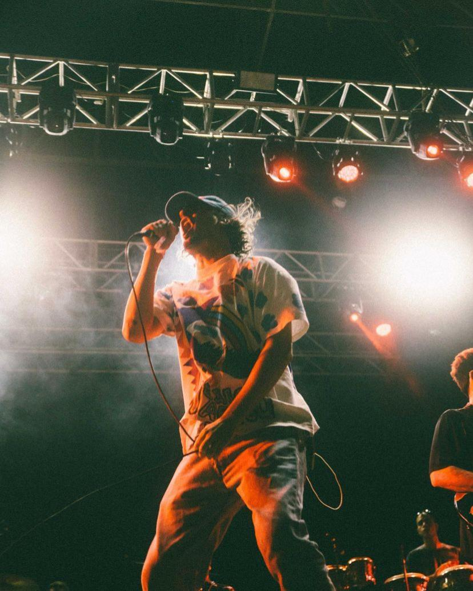
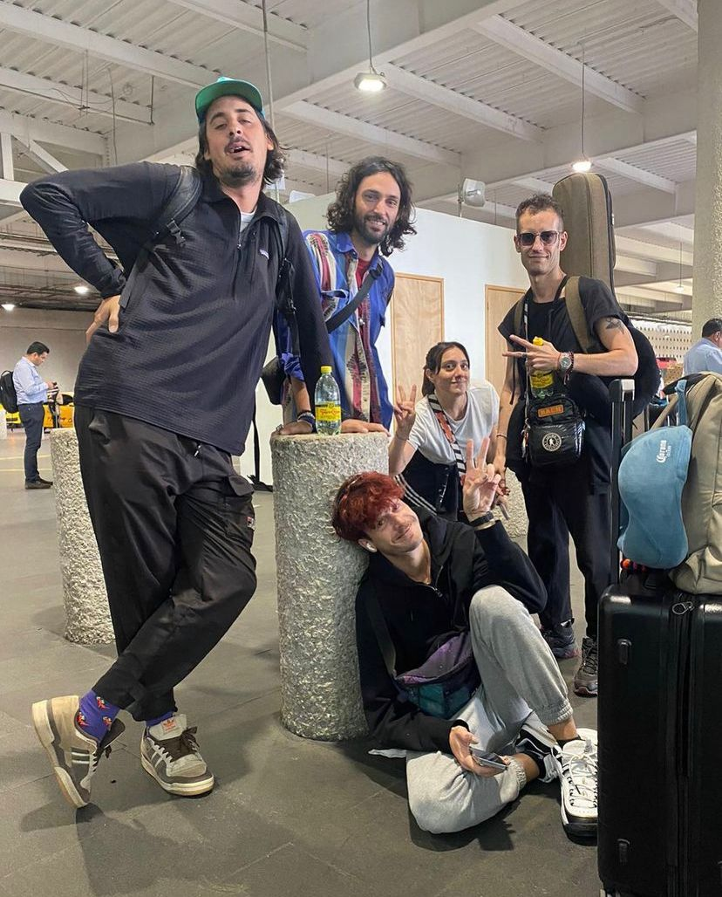
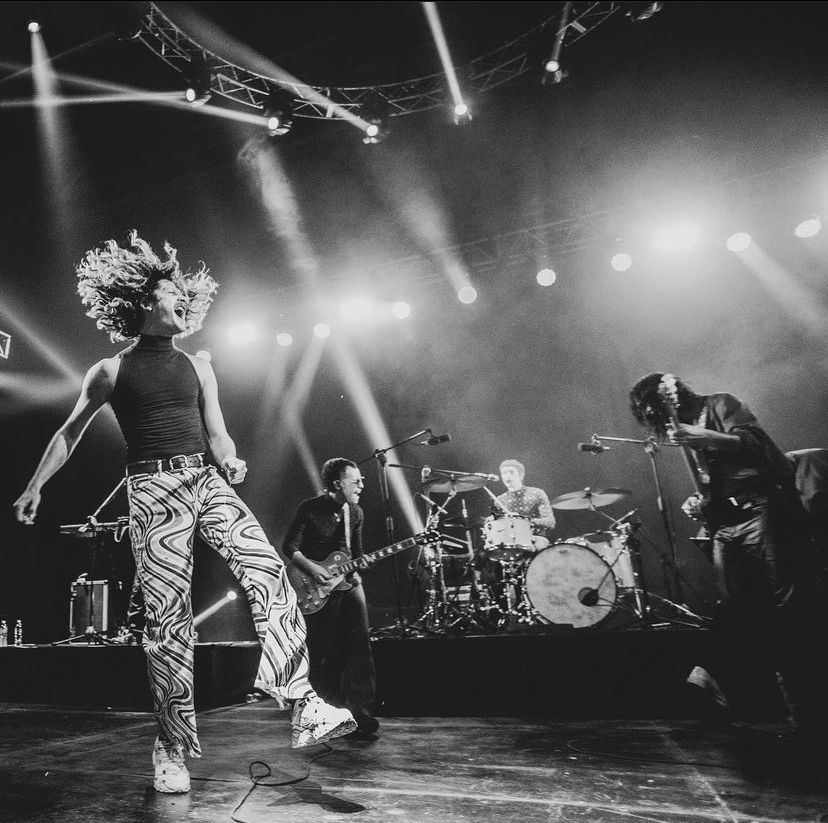
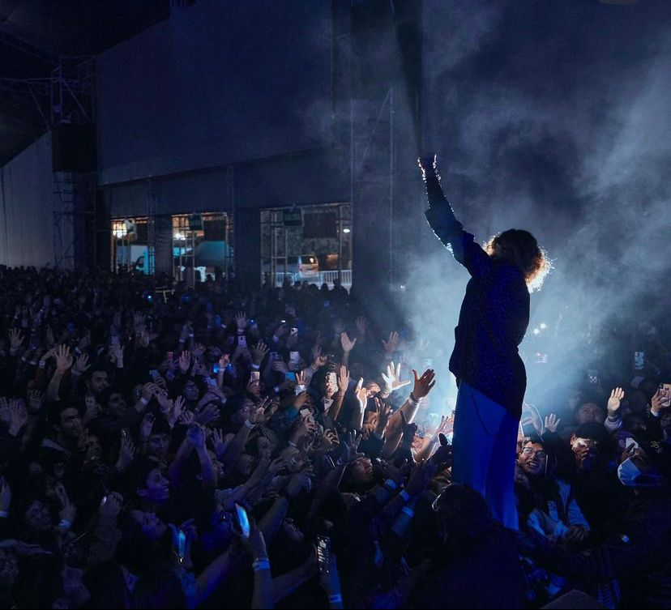
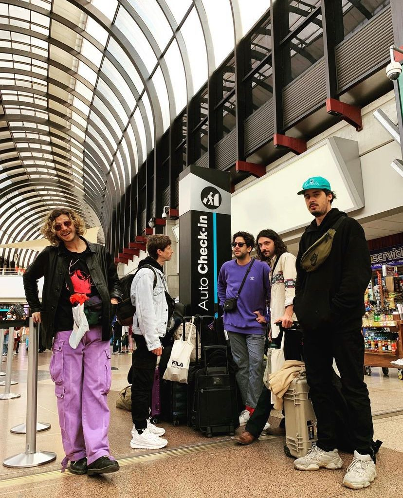

Conoce un poco de nuestros viajes a los largo de nuestra historia
Bandalos Chinos es una de las bandas más importantes de la escena actual argentina. Llevan editados BACH,
Paranoia Pop y este año lanzan El Big Blue, un disco que al igual que sus anteriores, fue grabado en Sonic
Ranch bajo la producción de Adan Jodorowsky y cuenta con 11 canciones, entre ellas los ya lanzados Mi
Fiesta, Una Propuesta y La Final.
Bandalos chinos es una banda formada en Buenos Aires, Argentina. Han sido ganadores de un Premio Gardel en
la categoría Mejor Álbum Pop. Ademas, la banda estuvo nominada a dos premio Latin GRAMMY. Con mas de 10 años
de carrera, Bandalos Chinos en 2022 recorrerá gran parte del mundo con su Big Blue Tour pasando por Europa y
gran parte de America Latina. Colombia y Medellín formará parte de este tour.
Bogota, Colombia

Paraguay
CDMX
Cordoba
Perú
Medellín
